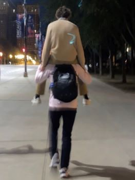

Getting to Know Griffin

Introduction
Hi, my name is Griffin Ebel, and I am currently a sophomore. I have lived in New Lenox my entire life and was born just around the corner in Palos. My major here at Lewis is unmanned aviation systems and I have loved almost every course I have taken thus far.
My Favorite Hobbies
My favorite hobby is either cooking or hiking. It is too difficult for me just to choose one as both bring me so much joy. I enjoy cooking as it allows for me to have a creative outlet where I can experiment and have an enjoyable result. On the other hand, I love activities such as hiking and camping as I have always loved nature and being emerged in it gives me a sense of peace.
Why I am taking Taking Programming Fundamentals
I am taking this course not only because it is the next step in major progression but also because I found that I really enjoy coding after taking introduction to computer science. I hope to further advance my familiarity with programming throughout this course as well as decide if I want to commit to a computer science major.
Favorite Fast Food Resturaunts
- Potbelly's
- Popeye's
- Taco Bell